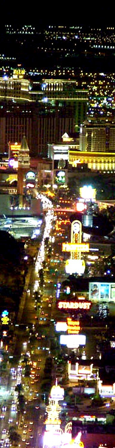

Starting in 1996, Alexa Internet has been donating their crawl data to the Internet Archive. Flowing in every day, these data are added to the Wayback Machine after an embargo period.
Crawl EI from Alexa Internet. This data is currently not publicly accessible.
TIMESTAMPS

What Is Ticket Summit?
Ticket Summit is the only ticket industry conference and trade
show directed solely at the secondary market. It will host a consortium of experts
and leaders within the ticket community, offering a chance to establish and foster
relationships valuable to your business.
Interactive forums and expert panels will educate and enhance your industry knowledge,
while the trade show floor’s exhibitors and product demonstrations give a
glimpse of the future of the ticketing industry.
Who Should Attend?
Anyone interested in the wide world of tickets!
Ticket Brokers
Ticket Wholesalers
Software vendors
Venture capitalist firms
Search engine marketing firms
Concert promoters
Agents
Managers
Where will it be held?
Ticket Summit will take place at the beautiful Venetian Hotel in Las Vegas, Nevada. This casino resort
is a tribute to Venice itself, with accurate, near-scale replicas of Venetian landmarks
and artwork built into the hotel's stunning architecture.
Rooms have been reserved for exhibitors and attendees at a discounted rate.
Highlights of the Venetian include an indoor half-mile long canal featuring gondola
rides complete with a singing gondolier, 17 specialty restaurants operated by a
who's who of celebrity chefs, and upscale shopping at the Grande Canal Shops more
than 50 boutiques.
When is the event happening?
Ticket Summit is scheduled for Wednesday, July 19 and Thursday, July 20, 2006.